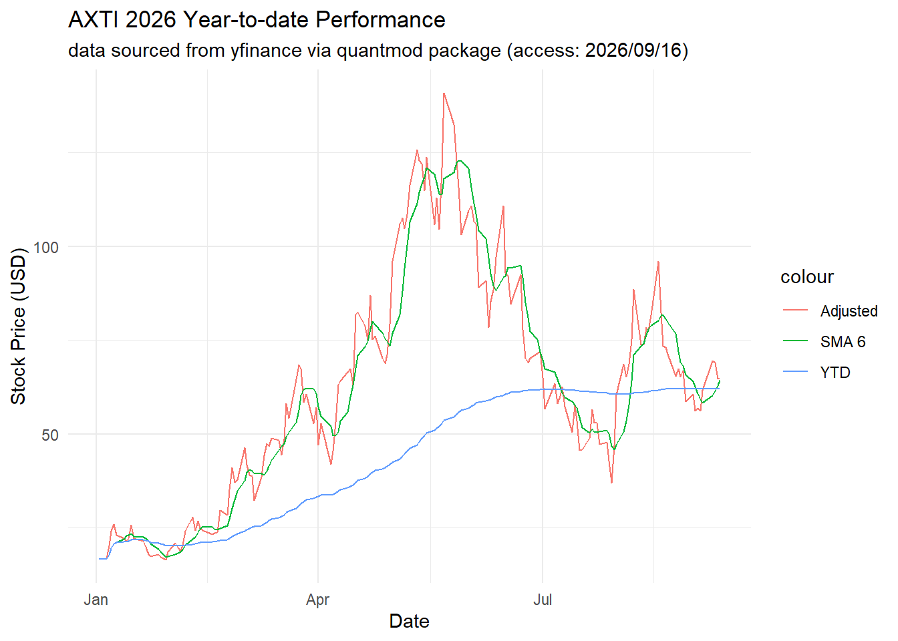
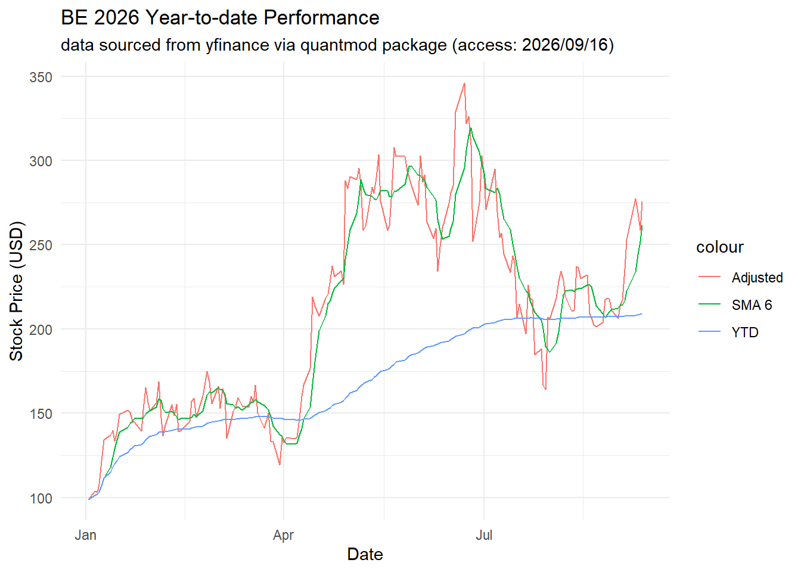
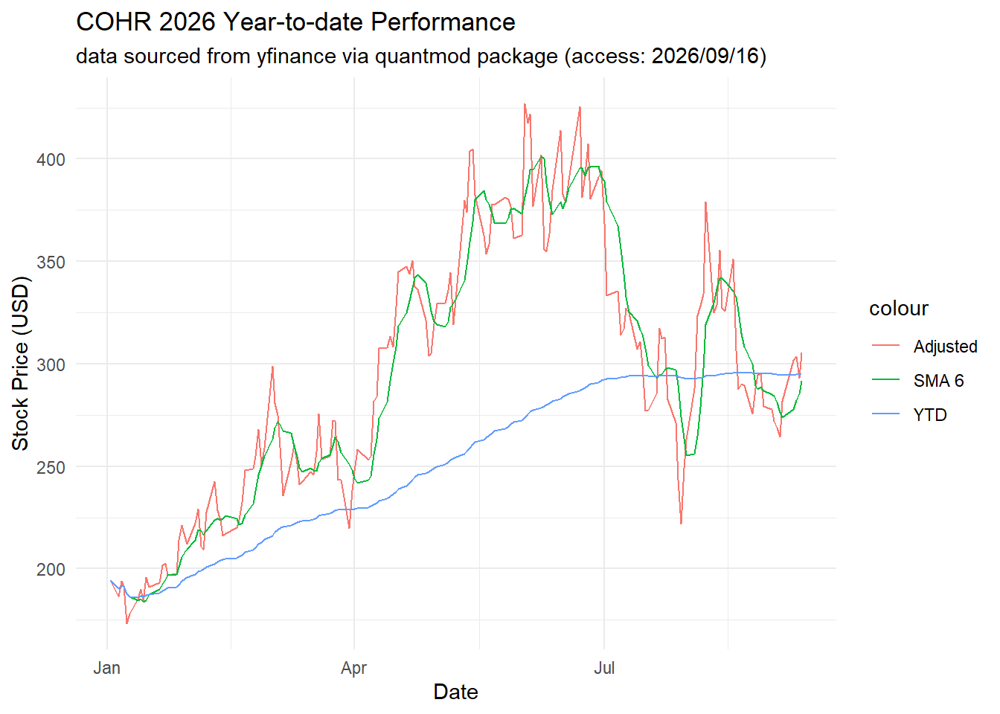
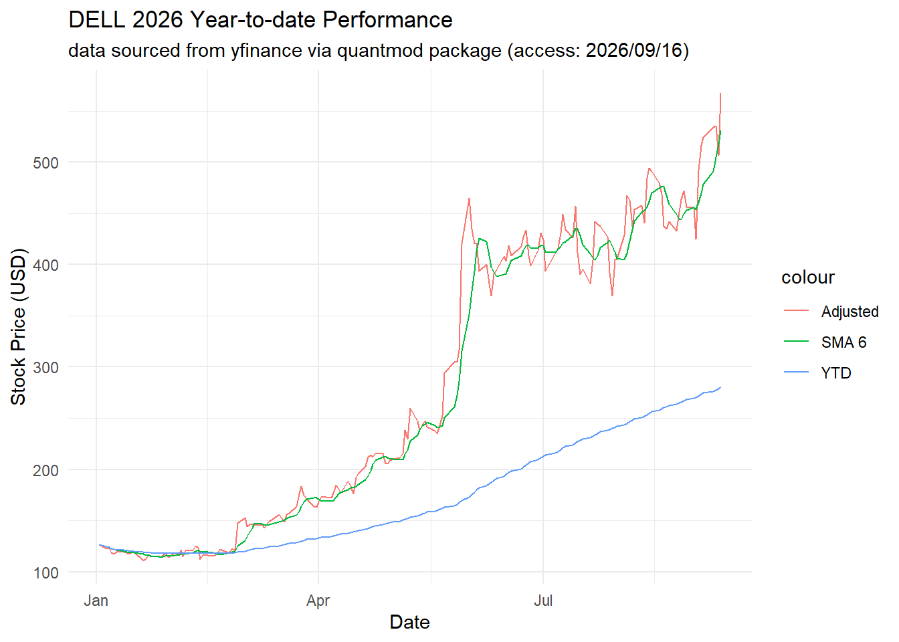
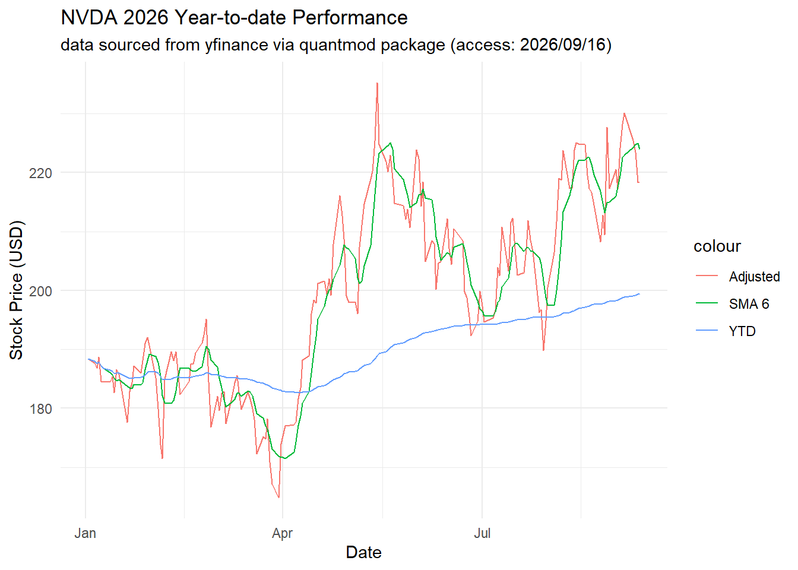
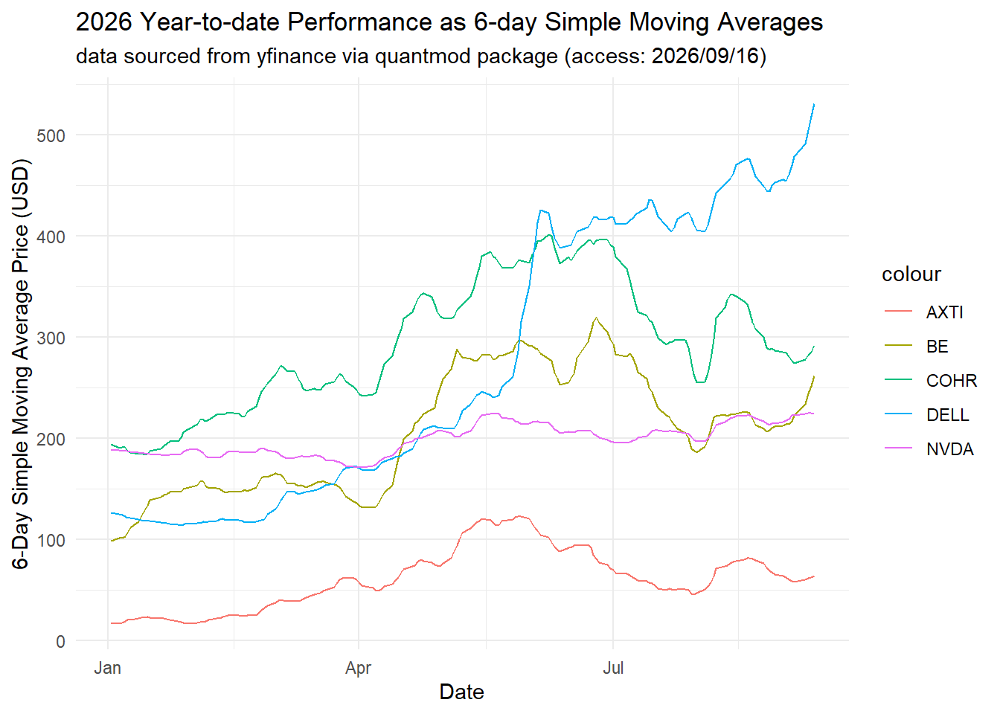

Window functions are a useful method to generate a new column of data calculated from previous columns while maintaining the original columns in tact. A common example is calculating a moving average column from data in preceding rows. Functions like sum(), summarize(), or count() are not window functions because they flatten the data into singular outputs, rather than maintaining the table rows.
In this assignment, window functions will be utilized to calculate rolling averages (year-to-date and six-day moving averages) of financial data. The data will be sourced from an open data provider of stocks traded on the New York Stock Exchange as of Friday, September 11, 2026. Since moving-averages are useful for stock price analysis, there are several types of moving average calculations used in this context. For instance, a 5-day simple-moving-average (SMA5) is calculated as the standard mean of the last five days’ observations (e.g. closing prices). Alternatively, the 5-day exponential-moving-average (EMA5) is a weighted moving average, which more heavily weighs recent data over temporally older data. This older data has an exponential decay pattern to its weighing, so the EMA is utilized as a more reactive alternative to SMA calculations. By contrast, the SMA calculations are less responsive to intra-day fluctuations and can provide smoother trends.
Anticipated challenges in this assignment include maintaining a reproducible pipeline from ingestion to analysis, identifying a reliable and free data source, and appropriately applying window functions in R.
Code Base
Data Ingestion from free, reliable source (Alpha Vantage API)
Alpha Vantage was selected as the data provider for this assignment, as it has a generous free tier and the documentation is available (https://www.alphavantage.co/documentation/). An API key was provisioned and stored in .Renviron for secure credential storage. The “TIME_SERIES_DAILY” API was chosen for this endeavor as it provides date, daily open, daily high, daily low, daily close, and daily volume values (OHLCV). Since this API returns data for one ticker symbol per request, only 5 tickers will be investigated for this report. This will allow for retries on these five tickers without tripping the daily query limit at the API. A small ticker universe was selected for this reasons, and it includes: $DELL, $AXTI, $BE, $COHR, and $NVDA. Accessing the API can be accomplished through the alphavantager package, available at https://cran.r-project.org/web/packages/alphavantager/refman/alphavantager.html. This API interface has a 1 request per second limit, so it is important to manually run each line below after a 1 second pause.
── Conflicts ────────────────────────────────────────── tidyverse_conflicts() ──
✖ dplyr::filter() masks stats::filter()
✖ dplyr::lag() masks stats::lag()
ℹ Use the conflicted package (<http://conflicted.r-lib.org/>) to force all conflicts to become errors
As observed above, the data from Alpha Vantage starts on 2026/04/24, however data is needed from the beginning of the year, or 2026/01/01. Queries sent to the AlphaVantage API for historical data between 2026/01/01 and 2026/04/23 were rejected due to free tier subscription level.
In order to input a full data set spanning the entire 2026 calendar year, a new API was explored: Massive (formerly polygon.io). However, working with Massive API was also problematic, as the API request limit is 5 per minute and data from each individual date would need to be queried. This would result in too many requests for this API, and the pull queries would get rejected.
As a fallback, the R package quantmod (https://www.quantmod.com/documentation/) provides access to the yfinance repository and has easy built-in commands like getSymbols(). Additionally, no API key is needed for this data source, resulting in a more repeatable and reproducible approach.
library(quantmod)start_date <-as.Date("2026-01-01")end_date <-as.Date("2026-09-13")getSymbols(ticker_univ, src ="yahoo", from = start_date, to = end_date)
The data source roadblock has been lifted, and now data cleaning can begin. For each data frame, the names are cleaned (removing periods), the object is converted to a tidyverse ready data frame, and only the adjusted close price column is maintained. Future users may choose to include other OHLCV data, in which case the select() functions can be disabled/removed.
Slider functions from the slider package are leveraged to calculate a 6-day simple moving average. Additionally, a year-to-date average is calculated for each row in each data frame using the cummean() function from the dplyr package within the tidyverse. These values are computed for each ticker’s adjusted price.
To make visualizing multiple tickers in the same plot possible, the data frames are joined together. Since each frame has an unnamed column where the dates are stored, rather than a true typecasted date column, the merge() function from base R will be utilized, rather than a left_join() from the tidyverse, where a common column is needed.
The date column is now a character vector, rather than a date vector. This can be fixed by mutating in a new column that stores the Row.names column as date type. Then, the select() function is used to keep all columns except the now redundant Row.names character column.
Now that a single data frame holds the data for all five tickers and has a correctly set date column, the figure generation can begin.
#| echo: true#| message: false#| warning: falsedf_full |>ggplot(aes(x=date)) +geom_line(aes(y=axti_adjusted, color ="Adjusted")) +geom_line(aes(y=axti_sma_6, color ="SMA 6")) +geom_line(aes(y=axti_ytd_avg, color ="YTD")) +labs(title ="AXTI 2026 Year-to-date Performance ", subtitle ="data sourced from yfinance via quantmod package (access: 2026/09/16)", x="Date", y="Stock Price (USD)") +theme_minimal()

#| echo: true#| message: false#| warning: falsedf_full |>ggplot(aes(x=date)) +geom_line(aes(y=be_adjusted, color ="Adjusted")) +geom_line(aes(y=be_sma_6, color ="SMA 6")) +geom_line(aes(y=be_ytd_avg, color ="YTD")) +labs(title ="BE 2026 Year-to-date Performance ", subtitle ="data sourced from yfinance via quantmod package (access: 2026/09/16)", x="Date", y="Stock Price (USD)") +theme_minimal()

#| echo: true#| message: false#| warning: falsedf_full |>ggplot(aes(x=date)) +geom_line(aes(y=cohr_adjusted, color ="Adjusted")) +geom_line(aes(y=cohr_sma_6, color ="SMA 6")) +geom_line(aes(y=cohr_ytd_avg, color ="YTD")) +labs(title ="COHR 2026 Year-to-date Performance ", subtitle ="data sourced from yfinance via quantmod package (access: 2026/09/16)", x="Date", y="Stock Price (USD)") +theme_minimal()

#| echo: true#| message: false#| warning: falsedf_full |>ggplot(aes(x=date)) +geom_line(aes(y=dell_adjusted, color ="Adjusted")) +geom_line(aes(y=dell_sma_6, color ="SMA 6")) +geom_line(aes(y=dell_ytd_avg, color ="YTD")) +labs(title ="DELL 2026 Year-to-date Performance ", subtitle ="data sourced from yfinance via quantmod package (access: 2026/09/16)", x="Date", y="Stock Price (USD)") +theme_minimal()

#| echo: true#| message: false#| warning: falsedf_full |>ggplot(aes(x=date)) +geom_line(aes(y=nvda_adjusted, color ="Adjusted")) +geom_line(aes(y=nvda_sma_6, color ="SMA 6")) +geom_line(aes(y=nvda_ytd_avg, color ="YTD")) +labs(title ="NVDA 2026 Year-to-date Performance ", subtitle ="data sourced from yfinance via quantmod package (access: 2026/09/16)", x="Date", y="Stock Price (USD)") +theme_minimal()

df_full |>ggplot(aes(x=date)) +geom_line(aes(y=axti_sma_6, color ="AXTI")) +geom_line(aes(y=be_sma_6, color ="BE")) +geom_line(aes(y=cohr_sma_6, color ="COHR")) +geom_line(aes(y=dell_sma_6, color ="DELL")) +geom_line(aes(y=nvda_sma_6, color ="NVDA")) +labs(title ="2026 Year-to-date Performance as 6-day Simple Moving Averages", subtitle ="data sourced from yfinance via quantmod package (access: 2026/09/16)", x="Date", y="6-Day Simple Moving Average Price (USD)") +theme_minimal()

df_full |>ggplot(aes(x=date)) +geom_line(aes(y=axti_ytd_avg, color ="AXTI")) +geom_line(aes(y=be_ytd_avg, color ="BE")) +geom_line(aes(y=cohr_ytd_avg, color ="COHR")) +geom_line(aes(y=dell_ytd_avg, color ="DELL")) +geom_line(aes(y=nvda_ytd_avg, color ="NVDA")) +labs(title ="2026 Year-to-date Performance as Cumulative Averages", subtitle ="data sourced from yfinance via quantmod package (access: 2026/09/16)", x="Date", y="Cumulative Year-to-Date Average Price (USD)") +theme_minimal()